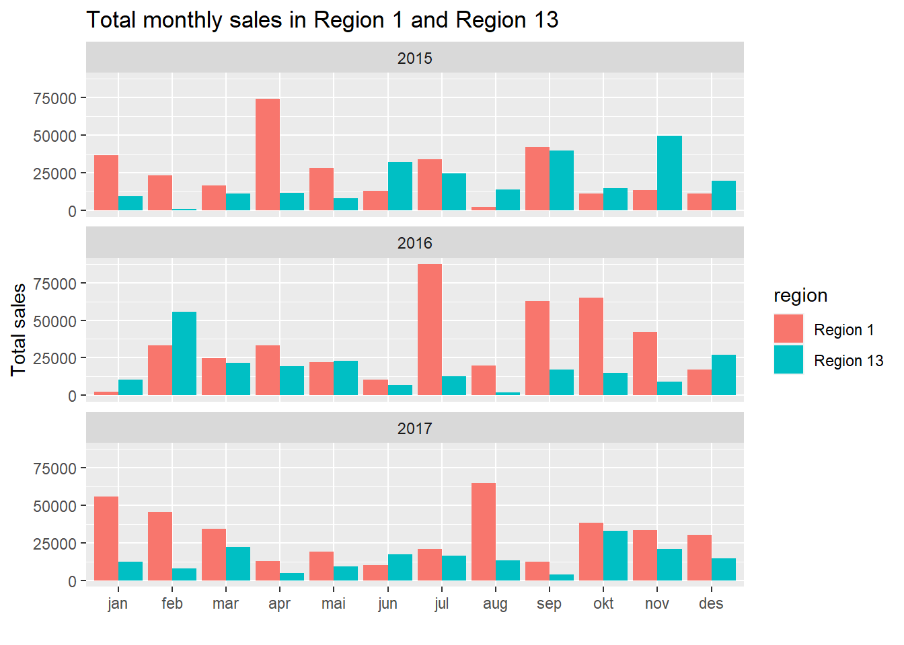
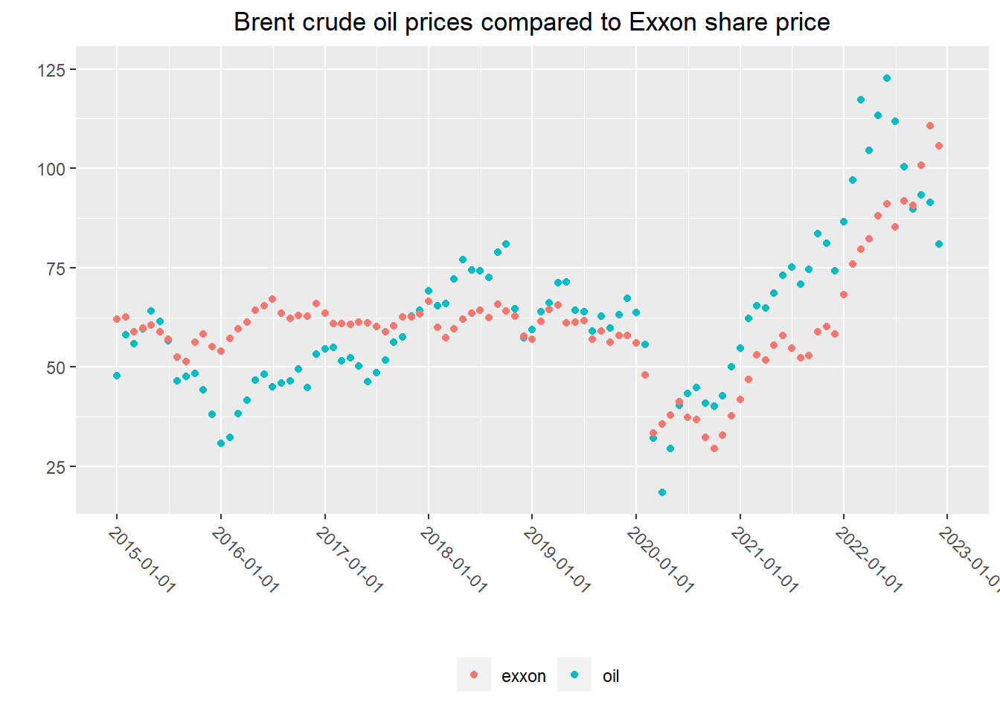
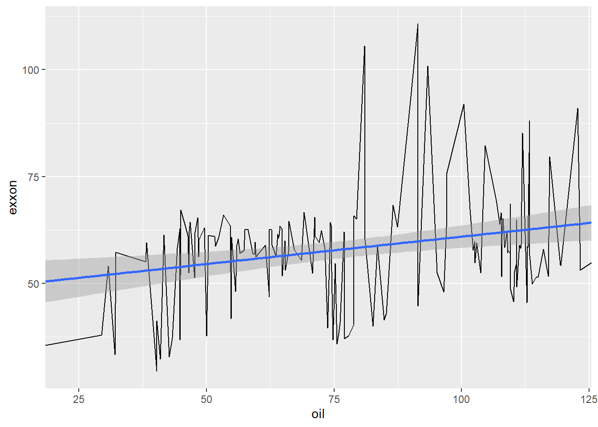

task 4
Task. 1
For the last 3 months of 2017, calculate the total Sales by month, for Region 1 and Region 9 in the Customer_Segment, Corporate, and Consumer. This output is Table 1.
| Region | Month | Customer segment | Total sales |
|---|---|---|---|
| Region 1 | 10 | Consumer | 815.790 |
| Region 1 | 10 | Corporate | 295.060 |
| Region 1 | 11 | Consumer | 9480.470 |
| Region 1 | 11 | Corporate | 8564.840 |
| Region 1 | 12 | Consumer | 210.060 |
| Region 1 | 12 | Corporate | 13260.838 |
| Region 9 | 10 | Consumer | 5908.890 |
| Region 9 | 10 | Corporate | 16781.431 |
| Region 9 | 11 | Consumer | 192.330 |
| Region 9 | 11 | Corporate | 5463.130 |
| Region 9 | 12 | Corporate | 9377.647 |
Make a plot of the monthly total Sales in Region 1 and Region 13 in 2015, 2016, and 2017. This output is Figure 1.

In Figure 1, identify the months where the total Sales in Region 13 is greater than the total Sales in Region 1. This output is Table 2.
| month | year | date | Region 1 | Region 13 |
|---|---|---|---|---|
| jan | 2016 | 2016-01-01 | 2362.43 | 10407.92 |
| feb | 2016 | 2016-02-01 | 33085.29 | 55631.95 |
| mai | 2016 | 2016-05-01 | 22068.67 | 22821.70 |
| jun | 2015 | 2015-06-01 | 12844.97 | 32306.88 |
| jun | 2017 | 2017-06-01 | 10335.31 | 17430.46 |
| aug | 2015 | 2015-08-01 | 2266.96 | 13985.22 |
| okt | 2015 | 2015-10-01 | 11058.13 | 14885.24 |
| nov | 2015 | 2015-11-01 | 13290.26 | 49685.99 |
| des | 2015 | 2015-12-01 | 11048.17 | 19514.99 |
| des | 2016 | 2016-12-01 | 17020.27 | 26889.71 |
Find the average Profit per Customer_Segment and Product_Category in 2017, for all regions except Region 3, 5 and 8. What segment produced the highest average profit? This output is Table 3.
| customer_segment | product_category | average_profit |
|---|---|---|
| Small Business | Technology | 544.442933 |
| Corporate | Technology | 413.915696 |
| Home Office | Technology | 271.119368 |
| Consumer | Technology | 223.123188 |
| Corporate | Office Supplies | 164.827620 |
| Consumer | Office Supplies | 107.459323 |
| Small Business | Office Supplies | 93.995230 |
| Home Office | Office Supplies | 71.364500 |
| Consumer | Furniture | 19.551912 |
| Small Business | Furniture | 16.874722 |
| Home Office | Furniture | 7.511408 |
| Corporate | Furniture | -88.222121 |
Task. 2
In this task, feel free to use any API or package/library that downloads the data to your session. Use code and download daily stock prices for Exxon Mobil Corporation (XOM), traded at NYSE. The Yahoo! Finance site is a convenient place to find the data . Use the Adjusted closing price from January 4th 2010 as the starting date. And calculate the monthly average using trading volume as a weight, and save this variable as “exxon”. Use code to download the daily Brent Crude Oil Price from FRED from January 4th 2010 as the starting date. And calculate the monthly arithmetic average. Save the monthly arithmetic average values as “oil”. In both variables, take December 2022, or 2022:12 for shorthand as a last data point.
Plot both variables, i.e., exxon and oil ” in the same plot window. Here, the x-axis should be the “date” variable. Comment on the plots.

The stock market appears to have a closer correlation with the oil price after 2015. It seems that the market was not greatly impacted by the decrease in oil prices from 2014 to 2015. However, after that year, the market appears to have followed a similar trend as the price of a barrel of oil.
Now take “exxon” as a y-variable and “oil” as an x-variable.
Use R’s lm() function. Set the variable on the y-axis and x-axis, and specify the data set.
LM(<Y variable name> ~ <X variable>, data=<dataset name>)

After “running” the code, how do you interpret the estimated coefficients?
Call:
lm(formula = exxon ~ oil, data = data_2)
Coefficients:
(Intercept) oil
48.1373 0.1282 The intercept coefficient shows the predicted value of Exxon when oil is 0, which is unlikely. The slope coefficient of 0.1282 means that for each unit increase in oil price, Exxon’s value increases by 0.1282. This shows a positive relationship between oil prices and Exxon’s share price.